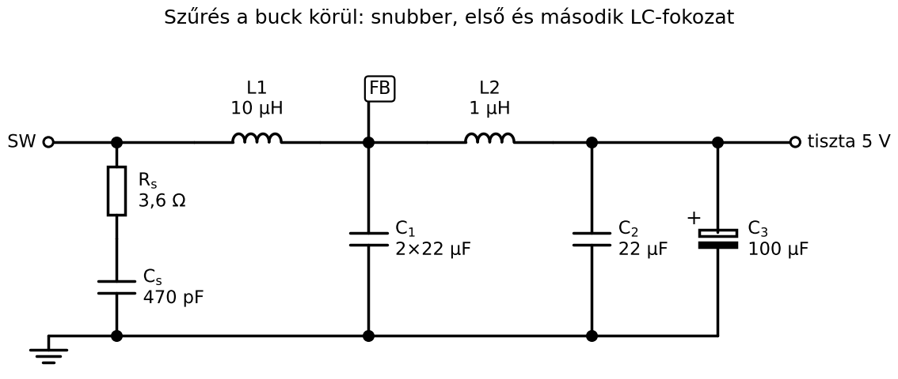
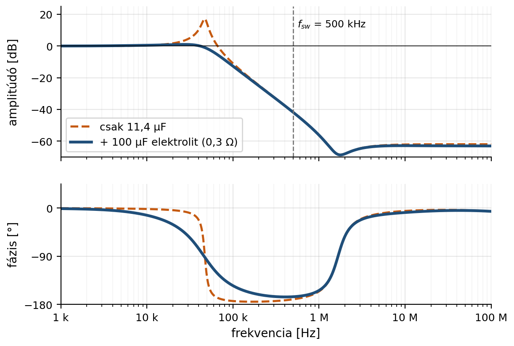

Az ideális buck nem melegszik és nem zajos; a valós mindkettő. Itt számba vesszük, hol vész el energia, és honnan jön a zaj. A végére:
A A buck konverter alfejezet szenzormodul-bucka 12 V-ból 5 V-ot ad. Két kérdés maradt nyitva. Először: a gyártói mintaábra 95 % körüli hatásfokot ígér – a mi alkatrészeinkkel is annyi lesz, és mennyire melegszik a vezérlő a 60 °C-os környezetben? Másodszor: a számolt hullámosság 5,9 mV, az oszcilloszkópon mégis jóval nagyobb, hegyes tüskék jelenhetnek meg. Miért, és mi a védekezés?
A veszteség a kapcsolás három „helyéről” származik, és eltérően függ a terheléstől:
Nagy terhelésen az első, kis terhelésen a harmadik csoport uralkodik – ezért van a hatásfokgörbének maximuma, és ezért rossz minden átalakító nagyon kis terhelésen.
Gondolkodj előre: ha a terhelőáram 1 A-ről 2 A-re nő, nagyjából hányszorosára nő a vezetési veszteség, és hányszorosára a gate-meghajtásé? (Az előbbi -tel, itt kb. 3,9-szeresére – a hullámosság hozzájárulása nem változik –, az utóbbi egyáltalán nem.)
A zajnak pedig két különböző forrása van: a hullámosság a kapcsolási frekvencián (500 kHz) a tekercsáram háromszöge miatt, és a tüskék a kapcsolás éleinél, ahol a parazita induktivitás és kapacitás száz MHz-es csengést kelt. A kettő ellen más eszköz kell.
A kapcsolási átmenet veszteségének képe: amíg a MOSFET nyit vagy zár, néhány nanoszekundumig egyszerre van rajta feszültség és folyik rajta áram. Ha mindkettő egyenesen változik, a teljesítmény–idő görbe alatti terület háromszög, energia élenként (Kapcsolási folyamat: gate-töltés, Miller-plató és meghajtás); ezt szorozzuk az élek számával másodpercenként.
Definíció. A veszteségmérleg (loss budget) az átalakító összes veszteségi összetevőjének listája egy adott munkapontban; a hatásfok .
| Összetevő | Közelítő képlet | Megjegyzés |
|---|---|---|
| felső kapcsoló vezetési | ||
| alsó kapcsoló vezetési | ugyanez -vel; diódánál | |
| kapcsolási átmenet | völgy-, csúcsáram | |
| gate-meghajtás | Kapcsolási folyamat: gate-töltés, Miller-plató és meghajtás | |
| csomópont-kapacitás | minden bekapcsoláskor kisül | |
| holtidő | test-dióda mindkét élnél | |
| záróirányú feléledés | folytonos üzemben | |
| tekercs | a vasveszteséget az adatlapból | |
| kondenzátorok | kerámiánál kicsi | |
| vezérlő | nyugalmi áram |
Minden tag mértékegysége watt: például . A képletek az ideális hullámformákból számolt becslések; a kapcsolási és a feléledési veszteség erősen függ a meghajtótól és a hőmérséklettől. Adatlapnál különböztesd meg a tipikus értéket (várakozás) a garantálttól (legrosszabb eset): a tervet a garantáltra ellenőrizd.
Kis terhelésen a frekvenciafüggő tagok közel állandók, ezért meredeken esik; ezen a vezérlők könnyű terhelésű üzemmódjai (diódaemuláció, impulzuskihagyás, PFM) segítenek, mert ritkábban kapcsolnak. A kényszerített folytonos üzem a legrosszabb: a negatív tekercsáram is veszteséget okoz. A mintaadatban nagyon kis árammal a diódás változat még jobb is, mint a szinkron, mert egy MOSFET gate-jét nem kell tölteni. Az ábrán a CCM-határnál látható kis ugrás a modellből ered (szaggatott üzemben feléledési veszteséget nem számolunk); a valóságban a görbe simább.
A tokba kerülő veszteségeket (kapcsolók, gate, vezérlő) összeadva: , ahol a záróréteg–környezet hőellenállás (K/W). A tekercs és a kondenzátor a saját melegedési adatával számolható: a mintamodell szerint az L10u_3A tekercs 1 A terhelésnél kb. 5 K-t, 2 A-nél kb. 18 K-t melegszik (az -hez tartozó 40 K-ből négyzetesen skálázva, a magveszteség nélkül). Mindez csak első becslés: erősen függ a NYÁK rézfelületétől (Hőtervezés és vezetőmelegedés).
Továbbvitt eredmény. A veszteségmérleg és a hatásfokbecslés (komponensenként, terhelés és frekvencia függvényében, majd ) a Hőtervezés és vezetőmelegedés alfejezetben és az 1. záróprojekt: védett tápegység 12 V-ról 5 V-ra és 3,3 V-ra projektben kap szerepet.
Tekercs (Valós induktivitás és ferritgyöngy): a hullámosságból; a vezérlő legnagyobb áramkorlátja fölött, meleg tekercsre; ; DCR és magveszteség a mérlegből; önrezonancia messze felett.
Bemeneti kondenzátor. A buck bemeneti árama szaggatott, a lüktetést viszi:
A legrosszabb eset , ekkor . Kerámia kell, tényleges (DC-bias utáni) kapacitással, a bemeneti védelem fogási feszültsége fölötti névleges feszültséggel (Tápbemeneti védelmek: biztosíték, polaritás, túlfeszültség, áramlökés).
A kerámia bemeneti kondenzátornak van egy mellékhatása is: a táp vezetékének induktivitásával kis veszteségű rezgőkört alkot, és a 12 V-os táp rácsatlakoztatásakor (hot plug) a bemenet a tápfeszültség közel kétszeresére lendülhet. Ellene csillapító elektrolit vagy TVS kell a bemenetre – ez a fogási feszültség és a kondenzátor névleges feszültsége közti tartalék egyik oka.
Kimeneti kondenzátor. A hullámosság mellett a terhelésugrás is méretez. Amíg a szabályzó reagál (kb. ideig, ahol a szabályzókör sávszélessége, hüvelykujjszabályként ), a hiányzó áramot a kondenzátor adja:
Terhelés lekapcsolásakor a tekercs fölös energiája a kondenzátorba kerül: . Mindkettő nagyságrendi becslés; a végső szót az adatlap és a szimuláció mondja ki.
Kapcsolók és dióda. A feszültségtűrés plusz a csengés felett legyen tartalékkal. Kis nagy chipet, tehát nagy -t és -t jelent: nagy áramnál a vezetési, nagy frekvencián a töltéses veszteség dönt. Aszinkron átalakítóban Schottky-dióda (Egyenirányítás, védő- és fogókapcsolások, Schottky-dióda).
A SW csomópont kapacitása ( a kapcsolók -a) és a forró hurok induktivitása rezgőkör (RLC tranziens: csillapítás és túllövés):
nH és pF esetén MHz, Ω. A csengés a tekercs párhuzamos kapacitásán (néhány pF) át a kimenetre jut, és a kondenzátor ESL-jén tüskét ejt. Csillapítás:
Az és méréssel meghatározható: ismert kondenzátort téve a SW pontra, amikor a csengés frekvenciája feleződik, az összkapacitás négyszereződött, tehát , és -ből adódik.
Az ábra egyszerűsített parazitás modell (mintaadat): a snubber a SW csúcsot kb. 16,8 V-ról 15,3 V-ra, a kimeneti tüskét 55 mV-ról 25 mV-ra csökkenti, kb. 34 mW áráért. A felső panelen a 20 MHz-re korlátozott görbe csak a hullámosságot mutatja.
Ha egy érzékeny fogyasztó (analóg táp, referencia) még tisztább feszültséget kér, a kimenet után második LC-fokozat jöhet. Az 500 kHz-es hullámosságot jól csillapítja, de a saját rezonanciáján erősít: , és kis veszteségnél nagy a (Rezonancia, jóság és sávszűrők). Ezért csillapítás kell: a -vel párhuzamosan egy nagyobb kapacitású, soros ellenállású ág (itt egy 100 µF-os elektrolit, amelynek 0,3 Ω-os ESR-je éppen megfelel).


A µH, µF (tényleges) fokozatnál kHz. A csillapítás a 17 dB-es csúcsot 1 dB-re veszi, az 500 kHz-es csillapítás (≈ 42 dB) változatlan. Figyelj arra, hogy a DCR-jén (20 mΩ) 1 A-nél 20 mV esik a szabályzáson kívül. A MHz-es tartományban az ESL korlátoz; a száz MHz-es tüskék ellen ferritgyöngy hatásosabb, de ellenőrizd az egyenáramú előmágnesezést (Zajszűrés: RC, LC, ferrit, közös módusú fojtó, árnyékolás).
Mérés. A tüskék nagy része gyakran a mérésből ered: a szonda hosszú földvezetéke antennaként szedi fel a forró hurok terét. Rövid földrugóval, közvetlenül a kondenzátoron mérj (Az oszcilloszkóp és a szonda); a hullámosságot sávkorlátozva (gyakran 20 MHz), a tüskéket teljes sávszélességgel, és mindkettőnél írd fel a beállítást.
Továbbvitt eredmény. A zaj forrásai: a forró hurok (), a SW csomópont csengése és -je; ellenszerei: kis hurok, snubber, csillapított második fokozat, ferrit. Erre épít Az EMC alapjai: forrás, csatolás, vevő, a Zajszűrés: RC, LC, ferrit, közös módusú fojtó, árnyékolás és a Tápintegritás és hidegítés.
| Szempont | Kész modul (integrált tekerccsel) | Diszkrét (vezérlő + tekercs) |
|---|---|---|
| tervezési munka | kicsi, adatlap szerinti kondenzátorok | méretezés, ellenőrzés, mérés |
| zaj | rövid belső forró hurok | az elrendezésen múlik |
| ár, méret | darabár magasabb, kompakt | nagy szériában olcsóbb |
| rugalmasság | kötött , áram, feszültség | szabadon méretezhető |
Továbbvitt eredmény. Az alkatrészválasztás szempontjai (a garantált értékek, az áramkorlát felett, DC-bias utáni kapacitás, RMS-áram, feszültségtartalék) az Az adatlap olvasása alfejezetben és az 1. záróprojekt: védett tápegység 12 V-ról 5 V-ra és 3,3 V-ra projektben használatosak.
Mintaadatok: felül 50 mΩ, alul 35 mΩ; ns; 5 + 8 nC, 5 V-os meghajtás; L10u_3A tekercs (DCR 45 mΩ), magveszteség 30 mW; , A, A, A².
Józanész: a veszteség a kimeneti teljesítmény 5 %-a, a lineáris szabályzó 7 W-os veszteségének (1 A-nél) kevesebb mint huszada. A Teljesítménymérleg, lineáris szabályzó és LDO tápfája ennél óvatosabb, 0,88-as buck-hatásfokkal számol: a mérleg így a biztonságos oldalon téved, ez a veszteségmérleg pedig a hőtervezéshez szükséges, a választott alkatrészekre vonatkozó becslés.
from dataclasses import replace
from elkit import parts, power, units
alap = replace(power.BuckParts(), dcr=0.045, esr_out=2e-3) # mintaadat
b = power.buck_losses(power.buck(), alap)
print(b.table())
tok = b.total - sum(b.items[n] for n in
("tekercs DCR", "tekercs vasveszteség", "bemeneti C ESR", "kimeneti C ESR"))
print(f"a tokban {units.fmt(tok, 'W')} → T_J ≈ {60 + 50 * tok:.0f} °C (R_θJA = 50 K/W)")
rossz = replace(alap, r_hs=0.075, r_ls=0.055, t_r=12e-9, t_f=12e-9, i_q=2e-3)
print(f"legrosszabb eset (feltételezett maximumok): η = "
f"{power.buck_losses(power.buck(), rossz).efficiency:.1%}")
for i_ki in (0.01, 0.1, 0.5, 2.0):
s = power.buck_losses(power.buck(i_out=i_ki), alap).efficiency
d = power.buck_losses(power.buck(i_out=i_ki), replace(alap, r_ls=None)).efficiency
print(f"I = {i_ki:4.2f} A: szinkron {s:.1%}, diódás {d:.1%}")felső kapcsoló vezetési 21.4 mW 8.3 %
alsó kapcsoló vezetési 21 mW 8.1 %
kapcsolási 48 mW 18.6 %
gate-meghajtás 32.5 mW 12.6 %
kimeneti kapacitás 5.4 mW 2.1 %
holtidő (test-dióda) 10.5 mW 4.1 %
záróirányú feléledés 30 mW 11.6 %
tekercs DCR 46.3 mW 17.9 %
tekercs vasveszteség 30 mW 11.6 %
bemeneti C ESR 1.27 mW 0.5 %
kimeneti C ESR 56.7 µW 0.0 %
vezérlő nyugalmi 12 mW 4.6 %
összes veszteség 258 mW
hasznos teljesítmény 5 W
hatásfok 95.1 %
a tokban 181 mW → T_J ≈ 69 °C (R_θJA = 50 K/W)
legrosszabb eset (feltételezett maximumok): η = 94.0%
I = 0.01 A: szinkron 37.6%, diódás 43.4%
I = 0.10 A: szinkron 84.5%, diódás 83.9%
I = 0.50 A: szinkron 93.9%, diódás 90.5%
I = 2.00 A: szinkron 94.5%, diódás 91.1%import numpy as np
from elkit import emc
c_be = 2 * parts.mlcc("4u7_1206_X7R_50V").capacitance(12.0)
op = power.buck()
du_be = 1.0 * op.duty * (1 - op.duty) / (op.f * c_be)
print(f"C_be tényleges {units.fmt(c_be, 'F')}, ΔU_be ≈ {du_be * 1e3:.0f} mV, "
f"I_Cbe,eff = {op.i_cin_rms:.3f} A")
sn = power.rc_snubber(2e-9, 150e-12, u=12.0, f=500e3)
print(f"csengés {units.fmt(sn.f_ring, 'Hz')}, R ≈ {sn.r:.1f} Ω, C ≈ {units.fmt(sn.c, 'F')}, "
f"P (470 pF) = {470e-12 * 12**2 * 500e3 * 1e3:.0f} mW")
c2 = parts.mlcc("22u_0805_X5R_10V").capacitance(5.0)
el = parts.capacitor("elko_100u")
f = np.logspace(3, 7, 4001)
z_l2 = 0.02 + 2j * np.pi * f * 1e-6
for nev, csill in (("csillapítatlan", False), ("csillapított", True)):
y = 1 / emc.z_capacitor(f, c2, esr=4e-3, esl=0.8e-9) + 1 / 5.0
if csill:
y = y + 1 / emc.z_capacitor(f, el.c, esr=el.esr, esl=el.esl)
h = 20 * np.log10(np.abs((1 / y) / (1 / y + z_l2)))
print(f"{nev:14s}: csúcs {h.max():5.1f} dB, 500 kHz-en "
f"{np.interp(500e3, f, h):6.1f} dB")C_be tényleges 7.99 µF, ΔU_be ≈ 61 mV, I_Cbe,eff = 0.505 A
csengés 291 MHz, R ≈ 3.7 Ω, C ≈ 450 pF, P (470 pF) = 34 mW
csillapítatlan: csúcs 17.1 dB, 500 kHz-en -41.7 dB
csillapított : csúcs 1.0 dB, 500 kHz-en -41.8 dBA pontos (0,505 A) a tekercsáram hullámosságát is tartalmazza; a 0,49 A-es kézi közelítés ennyivel kisebb.
buck_losses-szel a mintatekerccsel és egy 80 mΩ-os DCR-ű
tekerccsel a hatásfokot és a tekercs veszteségét.A buck veszteségei vezetési (), átmeneti () és terheléstől alig függő, frekvenciával arányos tagokból állnak; a veszteségmérlegből és a tok hőmérséklete () becsülhető. A tekercset , és DCR, a bemeneti kondenzátort , a kimenetit a hullámosság és a terhelésugrás méretezi, mindig tényleges kapacitással. A hullámosság -n, a tüskék a forró hurok és a SW kapacitás száz MHz-es csengéséből jönnek; ellenük kis hurok, RC-snubber, csillapított második LC-fokozat és ferrit segít, a méréshez pedig rövid szondaföld kell. A veszteségmérleget a hőtervezés, a zajforrásokat és a szűrést az EMC- és a tápintegritás-fejezetek, az alkatrészválasztási szempontokat az adatlap olvasása és a záróprojekt használja.
for dcr in (0.045, 0.080):
q = power.buck_losses(power.buck(i_out=2.0), replace(alap, dcr=dcr))
print(f"DCR = {dcr * 1e3:.0f} mΩ: tekercs {q.items['tekercs DCR'] * 1e3:.0f} mW, "
f"η = {q.efficiency:.1%}")DCR = 45 mΩ: tekercs 181 mW, η = 94.5%
DCR = 80 mΩ: tekercs 322 mW, η = 93.3%A 80 mΩ-os tekercs 141 mW-tal több hőt termel, a hatásfok 1,2 százalékponttal rosszabb. 4. pF; nH. Ω → 5,6 Ω; pF; mW. 5. A veszteség a frekvenciafüggő tagok miatt nő (2 MHz-en több mint négyszeres, mint 200 kHz-en); cserébe (és vele a méret) fordítottan arányosan kisebb, a hullámosság pedig ugyanakkora -vel kisebb, és a szabályzó gyorsabb lehet.
for f_sw in (200e3, 500e3, 1e6, 2e6):
o = power.buck(f=f_sw, l=10e-6 * 500e3 / f_sw, c=c2 * 2)
q = power.buck_losses(o, alap)
print(f"f = {units.fmt(f_sw, 'Hz'):8s} L = {units.fmt(o.l, 'H'):7s} "
f"veszteség {q.total * 1e3:4.0f} mW, η = {q.efficiency:.1%}, "
f"ΔU_C = {o.du_c * 1e3:.1f} mV")f = 200 kHz L = 25 µH veszteség 165 mW, η = 96.8%, ΔU_C = 15.9 mV
f = 500 kHz L = 10 µH veszteség 258 mW, η = 95.1%, ΔU_C = 6.4 mV
f = 1 MHz L = 5 µH veszteség 415 mW, η = 92.3%, ΔU_C = 3.2 mV
f = 2 MHz L = 2.5 µH veszteség 728 mW, η = 87.3%, ΔU_C = 1.6 mVy = 1 / emc.z_capacitor(f, c2, esr=4e-3, esl=0.8e-9) + 1 / 50.0
h = 20 * np.log10(np.abs((1 / y) / (1 / y + z_l2)))
print(f"50 Ω terhelés, csillapítás nélkül: csúcs {h.max():.1f} dB")50 Ω terhelés, csillapítás nélkül: csúcs 21.2 dB